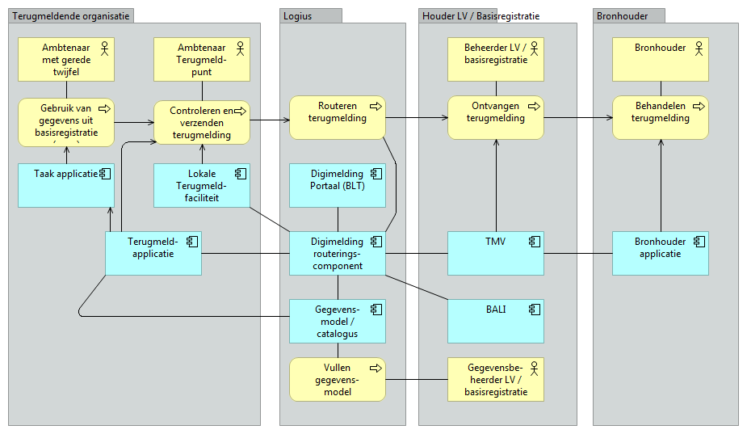
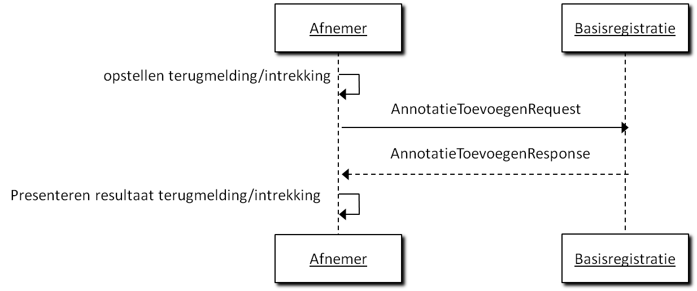
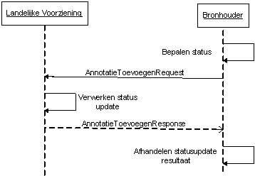

Dit is een werkversie die op elk moment kan worden gewijzigd, verwijderd of vervangen door andere documenten. Het is geen door het Technisch Overleg goedgekeurde consultatieversie.
1. Conformiteit
Naast onderdelen die als niet normatief gemarkeerd zijn, zijn ook alle diagrammen, voorbeelden, en noten in dit document niet normatief. Verder is alles in dit document normatief.
Documentbeheer
Datum
Versie
Auteur
Opmerkingen
13-02-2015
0.1
Logius
Eerste concept
0.2
28-10-2015
0.9
Logius
Diverse spellingsverbeteringen.
31-03-2016
0.91
Logius
Aanpassingen n.a.v. bevindingen pilot
30-03-2016
1.0
Logius
Definitief na goedkeuring Afnemersraad
14-05-2018
1.1
Logius
RFC Behandelend Bronhouder
21-11-2019
1.2
Logius
Zie release notes
24-06-2020
1.2.1
Logius
Tekstuele aanpassingen / correcties
01-06-2021
1.3
Logius
RFC-2020-3 - SSOn-Rijk gebruik in Digimelding Portaal
Voor terugmeldvoorzieningen in het algemeen is de Digimelding
Koppelvlakspecificatie (DMKS) opgesteld, waarin wordt
gespecificeerd hoe terugmeldingen verzonden dienen te worden. De
webservices waarmee gemeentelijke pakketleveranciers geautomatiseerde
terugmeldingen kunnen doen zijn ook gebaseerd op Digimelding.
De volgende partijen hebben meegewerkt aan de totstandkoming van dit
document: Gemeente Amsterdam, Centric, Gemeente Den Haag, Gemeente
Rotterdam, ICTU, Kamer van Koophandel, KING, Logius, PinkRoccade, Vicrea
en de Waarderingskamer.
Deze specificatie geeft een technische en functionele beschrijving van
een aantal services voor het uitwisselen van informatie tussen
terugmeldapplicaties, Digimelding Webservice en landelijke voorzieningen
van basisregistraties
De beschreven services zorgen ervoor dat de informatie op een standaard
manier wordt uitgewisseld.
In de volgende paragraaf wordt ingegaan op hoe de services zich
verhouden tot de NORA-informatiearchitectuur en welke standaarden worden
gebruikt. Vervolgens wordt dieper ingegaan op de functionaliteit die
deze services moeten bieden.
3.1 Referentiearchitectuur
In deze specificatie wordt uitgegaan van een referentiearchitectuur.
Figuur 1 De referentiearchitectuur{width="5.986629483814523in"
height="3.164179790026247in"}
In bovenstaande figuur is de referentie-applicatiearchitectuur weergegeven. Deze
gaat uit van een generiek overheidsperspectief, waarbij wordt
teruggemeld op meerdere basisregistraties en het dus handig is om
gebruik te maken van de routering door Digimelding Webservice. Het is
ook mogelijk om als afnemer direct aan te sluiten op de TMV van een
basisregistratie. De specificaties van de services in hoofdstuk 6 laten
beide varianten toe.
Aangaande deze catalogusvoorziening kunnen de verschillende catalogi ook
als bestanden beschikbaar gesteld worden aan de terugmeldende
organisaties voor implementaties in de eigen terugmeldapplicatie.
Aan deze specificatie wordt voldaan indien de in hoofdstuk 4 beschreven
services, voor zover deze relevant zijn voor de betreffende applicatie,
worden ondersteund.
Aanvullend geldt dat er een aantal implementatievarianten zijn.
Implementatievariant
Specifieke en aanvullende eisen
A1
De terugmeldende ambtenaar maakt gebruik van het landelijke Digimelding Webservice portaal.
A2
De terugmeldende ambtenaar maakt gebruik van een lokaal binnen de organisatie geïnstalleerd terugmeldportaal welke middels webservices communiceert.
A3
De terugmeldende ambtenaar maakt gebruik van een terugmeldoptie binnen zijn taakapplicatie; de taakapplicatie zet deze terugmelding door naar een terugmeldapplicatie binnen de organisatie welke middels webservices communiceert.
B1
De communicatie middels webservices tussen terugmeldende organisatie en landelijke voorziening van een basisregistratie loopt via een webservices koppelvlak op de Digimelding Webservice, als landelijke voorziening. Deze landelijke voorziening verzorgt routering naar basisregistraties (en mogelijk protocoltransformatie naar een vorige of volgende versie van het koppelvlak).
B2
De communicatie middels webservices tussen terugmeldende organisatie en landelijke voorziening van een basisregistratie loopt rechtstreeks (staat niet geïllustreerd in referentieplaatje hierboven).
4. Beveiliging, autorisatie en protocollen
4.1 Authenticatie en autorisatie
Binnen de Digimelding-keten vindt op meerdere plaatsen authenticatie en
autorisatie plaats.
In deze sectie wordt uitgelegd welke verschillende middelen er zijn en
in welke stap ze gebruikt worden. Binnen Digimelding vinden
authenticatie en autorisatie plaats op transportniveau, applicatieniveau
en soms op persoonsniveau. Transport en logistiek gaan via de
Digikoppeling-standaarden.
Op applicatieniveau gaat het over de terugmeldapplicatie van de afnemer,
Digimelding Webservice en TMVs van basisregistraties.
Persoonsniveau komt voor bij Digimelding Portaal en mogelijkerwijs bij
nog te ontwikkelen andere oplossingen die gebruik maken van eHerkenning
of SSOn Rijk. Daarnaast kent een afnemende organisatie ook nog interne
authenticatie en autorisatie voor het verkrijgen van toegang door de
terugmelder tot de terugmeldapplicatie. Dit is buiten scope van deze
specificatie.
Figuur 2 Authenticatie en autorisatie bij Digimelding
Autorisatie
Terugmelder
Terugmeld Applicatie
Digikoppeling Adapter
TMV Basisregistratie
E-herkenning in DMKS bericht OIN Vestigingsnr Persoonsaanduiding
OIN in DMKS bericht
OIN in Digikoppeling Headers WS-Adressing
Transport via Digikoppeling
SSOn Rijk OIN Vestigingsnr Persoonsaanduiding
(PKIO certificaat met OIN voor signing)
PKIO certificaat met OIN voor TLS/signing
Applicatie: via OIN in DMKS bericht of via E-Herkenning : OIN, vestigingsnummer en persoonsaanduiding in DMKS bericht of via SSOn Rijk attributen
Vrije keuze
OIN in Digikoppeling Header WS-security
Figuur 2. Authenticatie en autorisatie bij Digimelding
Indien in de keten de terugmelder met eHerkenning geauthenticeerd wordt,
willen basisregistraties dit altijd gebruiken als autorisatiemiddel en
dienen de eHerkenningsgegevens ( 'OIN'[^1], 'vestigingsnummer' en
'pseudoID' van de natuurlijk persoon(ontvangen via een SAML-token) in
het DMKS-bericht doorgegeven te worden. In deze gevallen is de
autorisatie voor de TMV-applicatie geregeld middels eHerkenning op
persoonsniveau.
Indien in de keten de terugmelder met SSOn-Rijk geauthenticeerd wordt,
willen basisregistraties dit altijd gebruiken als autorisatiemiddel en
dienen de gegevens ('OIN', en 'pseudoID' ) van de natuurlijk persoon
(ontvangen via een SAML-token) in het DMKS-bericht doorgegeven te
worden. In deze gevallen is de autorisatie voor de TMV-applicatie
geregeld middels SSOn-Rijk op persoonsniveau.
In het geval dat er geen authenticatie op Persoonssniveau plaatsvindt,
worden authenticatie en autorisatie op applicatieniveau gedaan op basis
van het OIN van de afnemende organisatie. Dit is het OIN dat een
organisatie krijgt wanneer deze zich aanmeldt voor Digikoppeling en is
terug te vinden in het OIN-register van Logius. Dit OIN wordt opgenomen
in het DMKS-bericht.
Indien de basisregistratie er om vraagt kan als extra
authenticatiemiddel signing van het DMKS-bericht met een
PKIoverheidcertificaat worden gevraagd. Dit certificaat dient van de
afnemende organisatie te zijn en het OIN te bevatten zoals uitgegeven
toen de organisatie zich aanmeldde voor Digikoppeling.
Op transportniveau wordt geautoriseerd op het OIN dat door de
Digikoppeling-adapter van de afnemende organisatie wordt gebruikt. Dit
wordt gebruikt in de Digikoppeling headers WS-Addressing (WUS) en
PartyID (ebMS) en in het PKIoverheidscertificaat dat voor transport
beveiliging (TLS) wordt gebruikt. Dit is niet altijd het OIN van de
organisatie zelf! Bij sectorale knooppunten, SaaS-oplossingen en
samenwerkingsverbanden kan dit mogelijk een ander OIN zijn. De interne
authenticatie en autorisatie (indien anders dan eHerkenning/SSOn-Rijk)
is volledig vrij door de afnemende organisatie in te vullen. Hiervan
hoeft niets meegegeven te worden in DMKS-berichten.
4.1.1 Protocollen
Bij synchrone communicatie wordt gebruik gemaakt van Digikoppeling WUS
volgens het '2W-be'-profiel[^2] met ondersteuning voor MTOM voor
efficiënt transport van attachments.
Indien een basisregistratie verzoekt om een authenticatie van de
terugmeldende organisatie wordt bij synchrone communicatie gebruikt
gemaakt van WUS Profiel Digikoppeling 2W-be-S[^3].
5. Specificaties Services
Dit hoofdstuk beschrijft de berichten tussen terugmeldapplicatie,
Digimelding Webservice en de LV van basisregistraties (gerouteerd via
Digimelding Webservice)
Het interactiediagram biedt overzicht in hoe de berichten zich tot
elkaar verhouden en in welke volgorde de berichten worden gebruikt.
Per bericht wordt aangegeven (indien relevant):
berichtnaam;
trigger van het bericht;
verandering in terugmeldapplicatie/Digimelding Webservice/LV
basisregistratie ten gevolge van het bericht;
lijst van objecten en velden in het bericht, en per veld:
specificatie van de vulling van het veld,
toelichting, bijvoorbeeld met de gebruikersactie of configuratie
die nodig is om de juiste vulling te krijgen.
Tevens wordt bij de berichten een interactiediagram getoond waarin
duidelijk wordt welk systeem het bericht initieert.
5.1 Annotaties Algemeen
De Digimelding-koppelvlakspecificatie (DMKS) die de basis vormt voor dit
koppelvlak gaat uit van annotaties. Alle informatie over een
terugmelding is vastgelegd in de vorm van een annotatie. Hierbij kent de
DMKS ook annotatiebomen waarbij root annotaties voorzien zijn van leaf
annotaties. De leafs zijn annotaties die een verwijzing bevatten naar de
UUID van de root annotatie waar ze aan hangen. In theorie is het
mogelijk dat een annotatie tegelijkertijd een root en leaf is, deze
annotatie hangt dan aan een andere 'root node' maar heeft zelf ook
leafs. Dit laatste komt in de huidige praktijk niet voor.
Iedere annotatie kent een basisset aan elementen: de 'annotatiebasis'
Deze worden bij iedere annotatie herhaald waardoor berichten behoorlijk
omvangrijk worden. Voor het overzicht wordt deze annotatie basis in de
volgende secties met specifieke berichten samengevat tot één regel
Annotatiebasis. Hieronder leggen we eenmalig uit welke elementen deze
annotatiebasis bevat.
Annotatiebasis
@uuid Unieke identificatie van de annotatie.
[1..1]
GeannoteerdDoor Gegevens van diegene die de annotatie heeft toegevoegd.
[1..1]
GeannoteerdDoor . Oin OIN van de terugmeldende organisatie.
[1..1]
GeannoteerdDoor . Vestiging Vestigingsnummer van desbetreffende organisatie uit eHerkenning/SSOn Rijk (indien door de afnemer toegepast voor authenticatie).
[0..1]
GeannoteerdDoor . Persoonsaanduiding Deze zal met webservices bijna altijd de waarde "anoniem" hebben. Er zijn twee uitzonderingen. De eerste is wanneer nadere afspraken gemaakt zijn met een basisregistratie over de invulling van dit veld. De tweede is dat, indien binnen de organisatie eHerkenning/SSOn Rijk gebruikt is voor autorisatie en authenticatie, persoonsaanduiding uit eHerkenning/SSOn Rijk dient te worden meegegeven.
[1..1]
GeannoteerdOp Tijdstempel waarop de annotatie heeft plaatsgevonden.
[1..1]
Toelichting Een toelichting bij de annotatie. In de huidige praktijk in gebruik voor root annotaties en status leaf annotaties voor overige leaf annotaties in de huidige praktijk altijd leeg.
[0..1]
Annotatieverwijzing Verwijzing naar de root annotatie waar een leaf annotatie aan gerelateerd is. Dit wordt afhankelijk van de relevantie opgenomen.
[0..1]
5.2 Annotatie versturen
De berichten beschreven in deze uitwisseling worden gebruikt om:
met de terugmeldapplicatie van een afnemer een terugmelding te
versturen
om een eerder door de afnemer gedane terugmelding in te trekken
om een status terug te melden van een bronhouder naar een Landelijke
Voorziening
5.2.1 Algemeen
+---------------+-----------------------------------------------------+
| Doel | Het toevoegen van een annotatie(boom) bij een op |
| | Digimelding aangesloten basisregistratie door een |
| | (medewerker van) een organisatie. |
| | |
| | -Het effect van het annotatie toevoegen |
| | terugmelden is het doen van een terugmelding. |
| | |
| | -Het effect van een annotatie toevoegen |
| | intrekken is het intrekken van een |
| | terugmelding. |
| | |
| | -Het effect van een annotatie toevoegen |
| | statuswijziging is het geven van een |
| | statusupdate. |
+---------------+-----------------------------------------------------+
| Voorwaarde | -Afname van gegevens uit basisregistraties door de |
| | terugmeldende organisatie, en het gedaan hebben van |
| | een check van de actuele waarde in de |
| | basisregistratie bij het doen van een terugmelding. |
| | |
| | -Voor het intrekken van een terugmelding moet |
| | er al een terugmelding gedaan is. |
| | |
| | -Voor het verzenden van een statuswijziging |
| | moet een terugmelding zijn ontvangen door de |
| | bronhouder |
+---------------+-----------------------------------------------------+
| Trigger | -Gerede twijfel over de juistheid van een gegeven |
| | in een op Digimelding aangesloten basisregistratie |
| | bij een ambtenaar binnen de organisatie. |
| | |
| | -Het terugkomen op de gerede twijfel van een eerder |
| | gedane terugmelding in het geval van intrekken. |
| | |
| | -Het veranderen van een status door middel van een |
| | statuswijziging van een terugmelding bij een |
| | bronhouder. |
+---------------+-----------------------------------------------------+
| Direct gevolg | Versturen van een bericht naar de betreffende |
| | bronhouder of landelijke voorziening. |
+---------------+-----------------------------------------------------+
| Vervolgactie | -De landelijke voorziening van de basisregistratie |
| | neemt de terugmelding in behandeling. De gebruiker |
| | van de terugmeldende organisatie kan dit volgen |
| | middels status opvragen. |
| | |
| | -De landelijke voorziening verwerkt de |
| | statusupdate. |
+---------------+-----------------------------------------------------+
5.2.2 Scenario's Communicatie
Figuur 3 Interactiediagram terugmelden/intrekken direct
Figuur 4 Interactiediagram terugmelden/intrekken via Digimelding Webservice
Figuur 5 Interactiediagram status wijzigen
5.2.3 Inhoud bericht Annotatie ToevoegenRequest
+--------------------------------------------------------+------------+
| AnnotatieToevoegenRequest | |
+========================================================+============+
| | |
+--------------------------------------------------------+------------+
| OinBasisregistratie | [1..1] |
| | |
| *\ | |
| *Het OIN van de houder van een landelijke voorziening | |
| van de basisregistratie; | |
+--------------------------------------------------------+------------+
| Registratie | [0..1] |
| | |
| Code (maximaal 3 letterig) waarmee de basisregistratie | |
| wordt aangeduid wanneer de houder van een landelijke | |
| voorziening meer dan 1 basisregistratie beheert (bv | |
| BRT, BGT). | |
+--------------------------------------------------------+------------+
| Annotatie | [1..1]* |
| | |
| > Dit element wordt alleen gevuld met een annotatie | |
| > die moet worden ingetrokken.. | |
+--------------------------------------------------------+------------+
| AnnotatieBoom | [1..1]* |
| | |
| > Bestaat uit minimaal één annotatie (de | |
| > terugmelding) en de bijbehorende leafs. | |
+--------------------------------------------------------+------------+
* De elementen Annotatie en AnnotatieBoom zijn onderdeel van een
verplicht keuzeveld: de AnnotatieToevoegenRequest bevat altijd slechts
één van de twee.
5.2.3.1 Annotatie toevoegen (terugmelden)
De structuur van de instanties van 'Annotatie' in de 'AnnotatieBoom' is
als volgt:
| AnnotatieBoom . Annotatie | [1..*] |
+=========================================================+===========+
| | |
+---------------------------------------------------------+-----------+
| Annotatie . Terugmelding | [1..1] |
+---------------------------------------------------------+-----------+
| Terugmelding . Annotatiebasis | |
+---------------------------------------------------------+-----------+
| Terugmelding . Bronverwijzingen | [1..1] |
| | |
| > Bronverwijzingen bestaande uit één of meerdere | |
| > bronverwijzing\ | |
| > Lijst van verwijzingen met basisregistratie elementen | |
| > waarop wordt teruggemeld. | |
+---------------------------------------------------------+-----------+
| > Terugmelding . Bronverwijzingen . Bronverwijzing | [1..*] |
| > | |
| > Bestaande uit een URI en een selectieverwijzing naar | |
| > het basisregistratie-element waarop wordt | |
| > teruggemeld. Dit zijn er meerdere, maar in de huidige | |
| > praktijk is dit er altijd precies één. | |
+---------------------------------------------------------+-----------+
| > Terugmelding . Bronverwijzingen . Bronverwijzing . | [1..1] |
| > Uri | |
| > | |
| > Een combinatie van OIN en de unieke sleutel van het | |
| > brongegeven zodat een unieke referentie ontstaat naar | |
| > het brongegeven (bijv. OIN en HRN). | |
+---------------------------------------------------------+-----------+
| > Terugmelding . Bronverwijzingen . Bronverwijzing . | [0..*] |
| > Selectie | |
| > | |
| > Selectie van een element binnen de structuur die | |
| > door de URI uniek geïdentificeerd wordt (bijvoorbeeld | |
| > onderneming). | |
+---------------------------------------------------------+-----------+
| Terugmelding . Attributenset | [1..1] |
| | |
| > De set van attributen die daadwerkelijk gewijzigd | |
| > dienen te worden. | |
+---------------------------------------------------------+-----------+
| Attribuut | [1..*] |
| | |
| > Eén of meerdere attributen die gewijzigd dienen te | |
| > worden. | |
+---------------------------------------------------------+-----------+
| Attribuut . Uri | [1..1] |
| | |
| > De unieke aanduiding van het attribuut | |
+---------------------------------------------------------+-----------+
| Attribuut . BetwijfeldeWaarde | [0..1] |
| | |
| > De bestaande waarde in de basisregistratie. | |
+---------------------------------------------------------+-----------+
| Attribuut . VoorgesteldeWaarde | [0..1] |
| | |
| > De voorgestelde nieuwe waarde. | |
+---------------------------------------------------------+-----------+
| Terugmelding . Peilmoment | [0..1] |
| | |
| > De datum waarop de betwijfelde waarde geldig is en | |
| > de voorgestelde waarde geldig zou moeten zijn. | |
+---------------------------------------------------------+-----------+
| | |
+---------------------------------------------------------+-----------+
| Annotatie . Annotatiestatus | [1..*] |
| | |
| Status van de terugmelding | |
+---------------------------------------------------------+-----------+
| Annotatiestatus . Annotatiebasis | |
+---------------------------------------------------------+-----------+
| Annotatiestatus . Status | [1..1] |
| | |
| > Zie bijlage B voor lijst met geadviseerde statussen | |
| > voor aangesloten basisregistraties.(Het is toegestaan | |
| > om in de eigen catalogus afwijkende statussen op te | |
| > nemen) | |
+---------------------------------------------------------+-----------+
| | |
+---------------------------------------------------------+-----------+
| Annotatie . Referentiekenmerk | [1..*] |
| | |
| Eigen kenmerk terugmeldende organisatie (het mogen er | |
| meer zijn, in de huidige praktijk altijd precies één). | |
+---------------------------------------------------------+-----------+
| Referentiekenmerk . Annotatiebasis | |
+---------------------------------------------------------+-----------+
| Referentiekenmerk . Kenmerk | [1..1] |
| | |
| > Eigen kenmerk terugmeldende organisatie. | |
| > | |
| > In de huidige praktijk maximaal 12 posities | |
+---------------------------------------------------------+-----------+
| | |
+---------------------------------------------------------+-----------+
| Annotatie . Contactinformatie | [1..*] |
| | |
| > Contactgegevens | |
+---------------------------------------------------------+-----------+
| Contactinformatie . @ContactType | [1..1] |
| | |
| > kan alleen de waarden 'Melder' of 'Behandelaar' | |
| > hebben | |
+---------------------------------------------------------+-----------+
| Contactinformatie . Annotatiebasis | |
+---------------------------------------------------------+-----------+
| Contactinformatie . Naam | [1..1] |
+---------------------------------------------------------+-----------+
| Contactinformatie . Telefoon | [0..1] |
+---------------------------------------------------------+-----------+
| Contactinformatie . Email | [1..1] |
+---------------------------------------------------------+-----------+
| Contactinformatie . Afdeling | [0..1] |
+---------------------------------------------------------+-----------+
| | |
+---------------------------------------------------------+-----------+
| Annotatie . Bijlageverwijzing | [0..*] |
| | |
| > HR ondersteunt maximaal 5 bijlagen. | |
+---------------------------------------------------------+-----------+
| Bijlageverwijzing . Annotatiebasis | |
+---------------------------------------------------------+-----------+
| Bijlageverwijzing . Bestandsnaam | [1..1] |
| | |
| > De naam van het bestand. | |
+---------------------------------------------------------+-----------+
| Bijlageverwijzing . MIMEType | [1..1] |
| | |
| Het MIME type van de bijlage. | |
+---------------------------------------------------------+-----------+
| Bijlageverwijzing . BijlageData | [1..1] |
| | |
| > Het bestand zelf in Base64-binary encoding. | |
+---------------------------------------------------------+-----------+
| Bijlageverwijzing . Beschrijving | [0..1] |
| | |
| > Beschrijving van de bijlage. De bijlage zelf wordt | |
| > nooit mee teruggeleverd bij het bevragen van een | |
| > terugmelding/annotatie. | |
+---------------------------------------------------------+-----------+
| | |
+---------------------------------------------------------+-----------+
| Annotatie . BehandelendeBronhouder | [0 *] |
| | |
| Behandelende bronhouder | |
+---------------------------------------------------------+-----------+
| BehandelendeBronhouder . Annotatiebasis | |
+---------------------------------------------------------+-----------+
| BehandelendeBronhouder . Bronhouder | [1..1] |
| | |
| De gewenste bronhouder | |
+---------------------------------------------------------+-----------+
5.2.3.2 Annotatie toevoegen (intrekken)
De volgende structuur is in de XML-structuur child van de 'Annotatie'.
+---------------------------------------------------------+-----------+
| Annotatiestatus | [1..*] |
| | |
| > Status van de terugmelding. | |
+=========================================================+===========+
| Annotatiestatus . Annotatiebasis | |
| | |
| Inclusief toelichting en annotatieverwijzing | |
+---------------------------------------------------------+-----------+
| Annotatiestatus . Status | [0..1] |
| | |
| Een afnemer kan bij het doen van een intrekking alleen | |
| de status: INGETROKKEN gebruiken in de huidige | |
| praktijk. | |
+---------------------------------------------------------+-----------+
**Annotatie toevoegen (statuswijziging) **De volgende structuur is in de XML-structuur child van de 'Annotatie'.
+---------------------------------------------------------+-----------+
| Annotatiestatus | [1..*] |
| | |
| > Status van de terugmelding. | |
+=========================================================+===========+
| Annotatiestatus . Annotatiebasis | |
| | |
| Inclusief toelichting en annotatieverwijzing | |
+---------------------------------------------------------+-----------+
| Annotatiestatus . Status | [0..1] |
| | |
| Zie bijlage B voor lijst met geadviseerde statussen | |
| voor aangesloten basisregistraties.(Het is toegestaan | |
| om in de eigen catalogus afwijkende statussen op te | |
| nemen) | |
+---------------------------------------------------------+-----------+
| Annotatiestatus . Statustype | [0..1] |
+---------------------------------------------------------+-----------+
| | |
+---------------------------------------------------------+-----------+
| Annotatie . Contactinformatie | [0..*] |
| | |
| > Contactgegevens. | |
+---------------------------------------------------------+-----------+
| Contactinformatie . @ContactType | [1..1] |
| | |
| kan alleen de waarden 'Melder' of 'Behandelaar' | |
| hebben | |
+---------------------------------------------------------+-----------+
| Contactinformatie . Annotatiebasis | |
+---------------------------------------------------------+-----------+
| Contactinformatie . Naam | [1..1] |
+---------------------------------------------------------+-----------+
| Contactinformatie . Telefoon | [0..1] |
+---------------------------------------------------------+-----------+
| Contactinformatie . Email | [1..1] |
+---------------------------------------------------------+-----------+
| Contactinformatie . Afdeling | [0..1] |
+---------------------------------------------------------+-----------+
| | |
+---------------------------------------------------------+-----------+
| Annotatie . Planningsverwachting | [0..*] |
| | |
| > Verwachte termijn voor behandeling | |
+---------------------------------------------------------+-----------+
| Planningsverwachting . Annotatiebasis | |
+---------------------------------------------------------+-----------+
| Planningsverwachting . MijlpaalAanduiding | [0..1] |
| | |
| > Beschrijving van de planningsverwachting. | |
+---------------------------------------------------------+-----------+
| Planningsverwachting . MijlpaalTijdstempel | [0..1] |
| | |
| > Datum waarop de planning gereed is. | |
+---------------------------------------------------------+-----------+
| | |
+---------------------------------------------------------+-----------+
| Annotatie . BehandelendeBronhouder | [0 *] |
| | |
| > Behandelende bronhouder | |
+---------------------------------------------------------+-----------+
| BehandelendeBronhouder . Annotatiebasis | |
+---------------------------------------------------------+-----------+
| BehandelendeBronhouder . Bronhouder | [1..1] |
| | |
| > De gewenste bronhouder (bij status "Verkeerde | |
| > Bronhouder") | |
+---------------------------------------------------------+-----------+
Optioneel kan bij een statuswijziging worden meegezonden:
Planningsverwachting, Contactinformatie en Behandelendbronhouder
(hiermee kan bij de statuswijziging "Verkeerde Bronhouder" de gewenste
bronhouder worden aangegeven).
5.2.3.3 Annotatie toevoegen (aanpassing)
Het antwoord op het toevoegen van een annotatie of het nu een
annotatieboom met volledige terugmelding is of een annotatie voor een
intrekking is altijd een AnnotatieToevoegenResponse-bericht met daarin
een tijdstempel. Het is een zogeheten functionele acknowledgement wat
betekent dat de achterliggende (TMV-)applicatie het vraagbericht in
goede orde ontvangen heeft.
+----------------------------------------------------------+----------+
| Berichttype: AnnotatieToevoegenResponse | |
+==========================================================+==========+
| Elementen/attributen | |
+----------------------------------------------------------+----------+
| AnnotatieToevoegenResponse | |
+----------------------------------------------------------+----------+
| AnnotatieToevoegenResponse . Tijdstempel | [1..1] |
| | |
| > Tijd waarop antwoord verstuurd is. | |
+----------------------------------------------------------+----------+
| AnnotatieToevoegenResponse . AnnotatieVerwijzing | [1..1] |
| | |
| > UUID van de toegevoegde annotatie waar het antwoord | |
| > betrekking op heeft. | |
+----------------------------------------------------------+----------+
5.3 Status bevragen
Deze interactie wordt gebruikt door de afnemer om meer informatie te
verkrijgen over de door zijn organisatie gedane terugmeldingen en de
huidige status van deze terugmeldingen.
5.3.1 Algemeen
Doel Het opvragen van de status van terugmeldingen van een terugmeldende organisatie.
Voorwaarde De organisatie heeft terugmeldingen gedaan.
Trigger Een gebruiker wil de status van terugmeldingen van zijn organisatie weten.
Direct gevolg De gebruiker is geïnformeerd over de status en eventueel extra detailinformatie van de terugmeldingen die hem interesseren.
Vervolgactie De gebruiker kan terugmeldingen van zijn organisatie intrekken op basis van de informatie verstrekt in het status overzicht.
Bijzonderheden -
5.3.2 StatusoverzichtRequest
Het bericht StatusoverzichtRequest wordt gebruikt in de communicatie
tussen Afnemer en LV/Basisregistratie alsook tussen LV/Basisregistratie
en Bronhouder om een statusoverzicht op te vragen.
Ter illustratie onderstaand de interactie tussen Afnemer en
Basisregistratie.
Figuur 6 Interactiediagram status opvragen via de Digimelding Webservice
Figuur 7 Interactiediagram status opvragen rechtstreeks
Het statusoverzicht wordt opgevraagd op basis van de verplichte
elementen OIN en basisregistratie. Het OIN is verplicht omdat alle
aangesloten basisregistraties alleen van plan zijn terugmeldingen van de
afnemer zelf terug te geven. Basisregistratie is verplicht, omdat dit
het doorgeven van functionele fouten door de Digimelding Webservice
vergemakkelijkt. Dit is een beperkte voorziening, het samenvoegen van
overzichtsberichten zou de complexiteit verhogen en vooral op een goede
wijze functionele fouten over meerdere basisregistraties heen geven,
levert teveel complexiteit op. In het geval dat het opgeven van één
basisregistratie verplicht is routeert de Digimelding Webservice
slechts. Naast deze verplichte elementen is er een aantal optionele
elementen waarmee de resultaten gefilterd kunnen worden. Een lijst met
kenmerken van de organisatie zelf kan worden meegegeven. Dit is handig
wanneer de afnemer een eigen registratiesysteem heeft. Daarnaast kan
gefilterd worden op de datum van indienen en de datum van laatste
wijziging. Tot slot kan er gefilterd worden op de status van
terugmeldingen. Dit is enigszins bewerkelijk aangezien iedere
basisregistratie zijn eigen statussen mag definiëren. In de
berichtenschema's is daarom slechts vastgelegd dat dit een string is.
+---------------------------------------------------------+-----------+
| Berichttype: StatusoverzichtRequest | |
+=========================================================+===========+
| Elementen/attributen | |
+---------------------------------------------------------+-----------+
| OinVragendeOrganisatie | [1..1] |
| | |
| OIN van de vragende organisatie. | |
+---------------------------------------------------------+-----------+
| OinBasisregistratie | [1..1] |
| | |
| *\ | |
| *Het OIN van de houder van een landelijke voorziening | |
| van de basisregistratie | |
+---------------------------------------------------------+-----------+
| Registratie | [0..1] |
| | |
| Code (maximaal 3 letterig) waarmee de basisregistratie | |
| wordt aangeduid wanneer de houder van een landelijke | |
| voorziening meer dan 1 basisregistratie beheert (bv | |
| BRT, BGT). | |
+---------------------------------------------------------+-----------+
| Filter | [0..1] |
+---------------------------------------------------------+-----------+
| Filter.MeldingskenmerkenLijst | [0..1] |
| | |
| (Lijst met)Eigen kenmerk(en) terugmeldende | |
| organisatie. | |
+---------------------------------------------------------+-----------+
| Fi | [1..*] |
| lter.MeldingskenmerkenLijst.MeldinggkenmerkLijstElement | |
+---------------------------------------------------------+-----------+
| Filter.VanafTijdstempelIndienen | [0..1] |
| | |
| Filtert resultaten die zijn ingediend voor dit | |
| tijdstempel weg. Resultaten op de tijdstempel of daarna | |
| worden getoond. | |
+---------------------------------------------------------+-----------+
| Filter.TotEnMetTijdstempelIndienen | [0..1] |
| | |
| Filtert resultaten die zijn ingediend na dit | |
| tijdstempel weg. Resultaten op de tijdstempel of | |
| daarvoor worden getoond. | |
+---------------------------------------------------------+-----------+
| Filter.VanafTijdstempelWijziging | [0..1] |
| | |
| *Filtert resultaten die zijn gewijzigd voor dit | |
| tijdstempel weg. Resultaten op de tijdstempel of daarna | |
| worden getoond.(*)\ | |
| * | |
+---------------------------------------------------------+-----------+
| Filter.TotEnMetTijdstempelWijziging | [0..1] |
| | |
| Filtert resultaten die zijn gewijzigd na dit | |
| tijdstempel weg. Resultaten op de tijdstempel of | |
| daarvoor worden getoond.(*) | |
+---------------------------------------------------------+-----------+
| Filter.StatusTerugmelding | [0..1] |
| | |
| String met daarin een status behorende bij de | |
| basisregistratie waarvan het overzicht gevraagd wordt. | |
+---------------------------------------------------------+-----------+
| Filter.Objectidentificatie | [0..1] |
| | |
| String met daarin een objectidentificatie behorende | |
| bij de basisregistratie waarvan het overzicht gevraagd | |
| wordt. Hiermee kunnen terugmeldingen ook op basis van | |
| KvK-nummer, BSN-nummer, BAG-id, etc teruggevonden | |
| worden. | |
+---------------------------------------------------------+-----------+
(*) Het resultaat betreft terugmeldingen (annotatiebomen) waarvoor
geldt dat de laatste annotatie is toegevoegd tussen
VanafTijdstempelWijziging en TotEnMetTijdstempelWijziging
5.3.3 StatusoverzichtResponse
Het statusoverzicht geeft een lijst met annotaties terug. Dit zijn in
dit geval altijd 'root' annotaties waar een annotatieboom aan hangt. Dit
is noodzakelijk omdat een aantal van de kenmerken die in de
annotatielijst verplicht worden meegegeven afkomstig zijn uit leaf
annotaties van een annotatieboom.
Wanneer het antwoord op een statusoverzichtbevraging niets oplevert
wordt een lege lijst meegegeven. In lijn met het 'gemeenschappelijke
afspraken berichtstandaarden'-voorstel voor 'geen waarde' wordt hierbij
als reden meegegeven 'geenWaarde'. Een regulier antwoordbericht is in
deze foutsituaties op zijn plaats omdat dit geen kritieke fouten zijn en
het aan de afnemer is om te bepalen of hier actie op moet worden
ondernomen.
+---------------------------------------------------------+-----------+
| Berichttype: StatusoverzichtResponse | |
+=========================================================+===========+
| Elementen/attributen | |
+---------------------------------------------------------+-----------+
| AnnotatieLijst | [1..*] |
+---------------------------------------------------------+-----------+
| Annotatie | [0..*] |
+---------------------------------------------------------+-----------+
| Annotatie . Tijdstempel | [1..1] |
| | |
| Datum/tijd waarop de annotatie heeft plaatsgevonden | |
+---------------------------------------------------------+-----------+
| Annotatie . Uuid | [1..1] |
| | |
| Unieke verwijzing naar de root annotatie van een | |
| annotatieboom. | |
+---------------------------------------------------------+-----------+
| Annotatie . Meldingskenmerk | [1..1] |
| | |
| Eigen kenmerk terugmeldende organisatie. | |
+---------------------------------------------------------+-----------+
| Annotatie . Bronverwijzing | [1..1] |
+---------------------------------------------------------+-----------+
| Annotatie . Bronverwijzing . Uri | [1..1] |
| | |
| Een combinatie van OIN en de unieke sleutel van het | |
| brongegeven zodat een unieke referentie ontstaat naar | |
| het brongegeven (bijv. OIN en HRN). | |
+---------------------------------------------------------+-----------+
| Annotatie . Bronverwijzing . Selectie | [0..1] |
| | |
| Object waarop is teruggemeld. | |
+---------------------------------------------------------+-----------+
| Annotatie . Annotatiestatus | [1..1] |
| | |
| Laatste status annotatie van de terugmelding. | |
+---------------------------------------------------------+-----------+
5.3.4 DetailsTerugmeldingRequest
Het bericht DetailsTerugmeldingRequest wordt gebruikt in de communicatie
tussen Afnemer en LV/Basisregistratie alsook tussen LV/Basisregistratie
en Bronhouder om details van een bepaalde terugmelding op te vragen.
Ter illustratie onderstaand de interactie tussen Afnemer en
Basisregistratie.
Figuur 8 Interactiediagram details terugmelding bevragen via Digimelding Webservice
Figuur 9 Interactiediagram detail terugmelding bevragen rechtstreeks
Het doel van dit bericht is het opvragen van alle informatie over één
terugmelding bij een basisregistratie. Hiervoor wordt het OIN van de
afnemer meegegeven en de basisregistratie waar de detailopvraging wordt
gedaan, tot slot wordt de UUID van de annotatie meegegeven. In de
huidige praktijk gaat het altijd om een UUID van een root annotatie.
Volgens het protocol kan ook een individuele leaf annotatie of een
deelboom worden opgevraagd. Dit is nu in theorie mogelijk maar wordt in
de praktijk niet toegepast en is niet getest.
+----------------------------------------------------------+----------+
| Berichttype: DetailsTerugmeldingRequest | |
+==========================================================+==========+
| Elementen/attributen | |
+----------------------------------------------------------+----------+
| OinVragendeOrganisatie | [1..1] |
| | |
| Identificatie d.m.v. OIN-vragende organisatie. | |
+----------------------------------------------------------+----------+
| OinBasisregistratie | [1..1] |
| | |
| *\ | |
| *Het OIN van de houder van een landelijke voorziening | |
| van de basisregistratie | |
+----------------------------------------------------------+----------+
| Registratie | [0..1] |
| | |
| Code (maximaal 3 letterig) waarmee de basisregistratie | |
| wordt aangeduid wanneer de houder van een landelijke | |
| voorziening meer dan 1 basisregistratie beheert (bv BRT, | |
| BGT). | |
+----------------------------------------------------------+----------+
| Uuid | [1..1] |
| | |
| UUID van root annotatie. | |
+----------------------------------------------------------+----------+
5.3.5 DetailsTerugmeldingResponse
Op basis van een UUID geeft een basisregistratie de annotatie met
daaraan hangende leafs terug als antwoord. Op dit moment is dat altijd
een toevoeging of wijziging (terugmelding) als root annotatie met
daaraan altijd tenminste één van elk van de volgende leafs: contact,
meldingskenmerk en/of status. Daarnaast worden optioneel één of meerdere
leafs van het type: Bijlageverwijzing en Planningsverwachting
meegegeven.
Een basisregistratie moet het opvragen van root annotaties met eraan
hangende boom ondersteunen, daarnaast mag een basisregistratie
annotatie(bomen) teruggeven van niet root annotaties, dit is echter nu
nog niet gerealiseerd of getest. Aangezien het statusoverzicht alleen
root annotaties oplevert zal het opvragen van andere soorten annotaties
in de praktijk ook niet snel voorkomen.
Doordat de annotatiebasis in iedere annotatie zit wordt de annotatieboom
een behoorlijk lijvige constructie. In de onderstaande berichten wordt
deze daarom tot één regel afgekort. Zie paragraaf 4.1 voor een
uitgebreide toelichting van wat er in de annotatiebasis staat. Elke
annotatie kent een eigen instantie, zoals ook bij
'AnnotatieToevoegenRequest' en elke annotatie kan slechts één van de
volgende soorten annotaties bevatten: Terugmelding, Annotatiestatus,
Referentiekenmerk, Contactinformatie, Bijlageverwijzing,
Planningsverwachting en BehandelendeBronhouder.
+---------------------------------------------------------+-----------+
| Berichttype: DetailsTerugmeldingResponse | |
+=========================================================+===========+
| Elementen/attributen | |
+---------------------------------------------------------+-----------+
| AnnotatieBoom | [1..1] |
| | |
| > De container die de verzameling annotaties bevat die | |
| > ofwel het gevraagde UUID als kenmerk hebben of daar | |
| > middels een annotatieverwijzing naar verwijzen. | |
+---------------------------------------------------------+-----------+
| | |
+---------------------------------------------------------+-----------+
| Annotatie . Terugmelding | [1..1] |
| | |
| De terugmelding (de annotatie die uiteindelijk de root | |
| annotatie zal worden) | |
+---------------------------------------------------------+-----------+
| Terugmelding . Annotatiebasis | |
+---------------------------------------------------------+-----------+
| Terugmelding . Bronverwijzingen | [1..1] |
| | |
| > Bronverwijzingen bestaande uit één of meerdere | |
| > bronverwijzing(en) | |
| > | |
| > Lijst van verwijzingen met basisregistratie | |
| > elementen waarop wordt teruggemeld. | |
+---------------------------------------------------------+-----------+
| Bronverwijzingen . Bronverwijzing | [1..*] |
| | |
| > Bestaande uit een URI en een selectieverwijzing naar | |
| > het basisregistratie element waarop wordt | |
| > teruggemeld. Dit mogen er meerdere zijn, maar in de | |
| > huidige praktijk is dit er altijd precies één. | |
+---------------------------------------------------------+-----------+
| Bronverwijzing.Uri | [1..1] |
| | |
| > De URI die de combinatie van basisregistratie en | |
| > sleutel (bijvoorbeeld BSN of HRN) uniek | |
| > identificeert. | |
+---------------------------------------------------------+-----------+
| Bronverwijzing.Selectie | [0..*] |
| | |
| > Selectie van een element binnen de structuur die | |
| > door de URI uniek geïdentificeerd wordt (bijvoorbeeld | |
| > onderneming). | |
+---------------------------------------------------------+-----------+
| Terugmelding . Attributenset | [1..1] |
| | |
| > De set van attributen die daadwerkelijk gewijzigd | |
| > dienen te worden. | |
+---------------------------------------------------------+-----------+
| Attributenset . Attribuut | [1..*] |
| | |
| > Eén of meerdere attributen die gewijzigd dienen te | |
| > worden. | |
+---------------------------------------------------------+-----------+
| Attribuut . Uri | [1..1] |
| | |
| > De unieke aanduiding van het attribuut | |
+---------------------------------------------------------+-----------+
| Attribuut . BetwijfeldeWaarde | [0..1] |
| | |
| > De bestaande waarde in de basisregistratie. | |
+---------------------------------------------------------+-----------+
| Attribuut . VoorgesteldeWaarde | [0..1] |
| | |
| > De voorgestelde nieuwe waarde. | |
+---------------------------------------------------------+-----------+
| Terugmelding . Peilmoment | [0..1] |
| | |
| > De datum waarop de betwijfelde waarde geldig is en | |
| > de voorgestelde waarde geldig zou moeten zijn. | |
+---------------------------------------------------------+-----------+
| | |
+---------------------------------------------------------+-----------+
| Annotatie . Annotatiestatus | [1..*] |
| | |
| > Status van de terugmelding, de status met de meest | |
| > recente datum GeannoteerdOp is de geldige status. | |
+---------------------------------------------------------+-----------+
| Annotatiestatus . Annotatiebasis | |
+---------------------------------------------------------+-----------+
| Annotatiestatus . Status | [1..1] |
| | |
| > *Zie bijlage B voor lijst met geadviseerde statussen | |
| > voor aangesloten basisregistraties. Het is toegestaan | |
| > om in de eigen catalogus afwijkende statussen op te | |
| > nemen)\ | |
| > * | |
+---------------------------------------------------------+-----------+
| | |
+---------------------------------------------------------+-----------+
| Annotatie . Referentiekenmerk | [1 *] |
| | |
| > Eigen kenmerk terugmeldende organisatie (het mogen | |
| > er meer zijn, in de huidige praktijk altijd precies | |
| > één). | |
+---------------------------------------------------------+-----------+
| Referentiekenmerk.Annotatiebasis | |
+---------------------------------------------------------+-----------+
| Referentiekenmerk.Kenmerk | [1..1] |
| | |
| > Eigen kenmerk terugmeldende organisatie. | |
+---------------------------------------------------------+-----------+
| | |
+---------------------------------------------------------+-----------+
| Annotatie . Contactinformatie | [1 *] |
| | |
| > Contactgegevens. | |
+---------------------------------------------------------+-----------+
| Contactinformatie . @ContactType | [1..1] |
| | |
| kan alleen de waarden 'Melder' of 'Behandelaar' | |
| hebben | |
+---------------------------------------------------------+-----------+
| Contactinformatie . Annotatiebasis | |
+---------------------------------------------------------+-----------+
| Contactinformatie . Naam | [1..1] |
+---------------------------------------------------------+-----------+
| Contactinformatie . Telefoon | [0..1] |
+---------------------------------------------------------+-----------+
| Contactinformatie . Email | [1..1] |
+---------------------------------------------------------+-----------+
| Contactinformatie . Afdeling | [0..1] |
+---------------------------------------------------------+-----------+
| | |
+---------------------------------------------------------+-----------+
| Annotatie . Bijlageverwijzing | [0..*] |
| | |
| > Metainformatie over bijlagen. | |
| > | |
| > Wordt in de praktijk niet ondersteund door BRP, HR | |
| > ondersteunt er maximaal 5. | |
+---------------------------------------------------------+-----------+
| Bijlageverwijzing . Annotatiebasis | |
+---------------------------------------------------------+-----------+
| Bijlageverwijzing . Bestandsnaam | [1..1] |
| | |
| De naam van het bestand. | |
+---------------------------------------------------------+-----------+
| Bijlageverwijzing . MIMEType | [1..1] |
| | |
| Het MIME type van de bijlage. | |
+---------------------------------------------------------+-----------+
| Bijlageverwijzing . BijlageData | [1..1] |
| | |
| *Het bestand zelf in Base64-binary encoding.(*)\ | |
| (* Dit veld wordt bij een bericht | |
| '*DetailsTerugmeldingResponse' leeg gelaten ) | |
+---------------------------------------------------------+-----------+
| Bijlageverwijzing . Beschrijving | [0..1] |
| | |
| > *Beschrijving van de bijlage. De bijlage zelf wordt | |
| > nooit mee teruggeleverd bij het bevragen van een | |
| > terugmelding/annotatie.\ | |
| > * | |
+---------------------------------------------------------+-----------+
| | |
+---------------------------------------------------------+-----------+
| Annotatie . Planningsverwachting | [0..*] |
| | |
| > Verwachte termijn voor behandeling, wordt alleen | |
| > gebruikt door BRP en komt dan slechts eenmaal voor. | |
+---------------------------------------------------------+-----------+
| Planningsverwachting . Annotatiebasis | |
+---------------------------------------------------------+-----------+
| Planningsverwachting . MijlpaalAanduiding | [0..1] |
| | |
| > Beschrijving van de planningsverwachting. | |
+---------------------------------------------------------+-----------+
| Planningsverwachting . MijlpaalTijdstempel | [0..1] |
| | |
| > Datum waarop de planning gereed is. | |
+---------------------------------------------------------+-----------+
| | |
+---------------------------------------------------------+-----------+
| Annotatie . BehandelendeBronhouder | [0 *] |
| | |
| > Behandelende bronhouder, huidige behandelaar is leaf | |
| > annotatie met meest recente tijdstempel. | |
+---------------------------------------------------------+-----------+
| BehandelendeBronhouder . Annotatiebasis | |
+---------------------------------------------------------+-----------+
| BehandelendeBronhouder . Bronhouder | [1..1] |
| | |
| > De bronhouder die de terugmelding momenteel in | |
| > behandeling heeft. | |
+---------------------------------------------------------+-----------+
5.4 Echo
De berichten beschreven in deze uitwisseling kunnen worden gebruikt om
te controleren of de berichtverwerking in zijn algemeenheid beschikbaar
is.
5.4.1 Algemeen
Doel Het ontvangen van een antwoordbericht waaruit blijkt dat de berichtverwerking conform specificaties werkt.
Voorwaarde Geen.
Trigger Behoefte om te controleren of berichtverwerking naar behoren functioneert.
Direct gevolg Terugsturen van een echobericht.
Vervolgactie Indien de echo faalt onderzoeken waardoor dit wordt veroorzaakt.
Bijzonderheden
Figuur 10 Interactiediagram voor echo's
Figuur 11 Interactiediagram echoverzoek via Digimelding Webservice
5.4.2 EchoRequest
De structuur van het echoverzoek is als volgt:
+----------------------------------------------------------+----------+
| Berichttype: EchoRequest | |
+==========================================================+==========+
| | |
+----------------------------------------------------------+----------+
| EchoRequest . OinBasisregistratie | [1..1] |
| | |
| Het OIN van de basisregistratie waar het echoverzoek | |
| naar toe moet | |
+----------------------------------------------------------+----------+
| EchoRequest .OinBasisregistratie | [1..1] |
| | |
| *\ | |
| *Het OIN van de houder van een landelijke voorziening | |
| van de basisregistratie | |
+----------------------------------------------------------+----------+
| EchoRequest . Registratie | [0..1] |
| | |
| Code (maximaal 3 letterig) waarmee de basisregistratie | |
| wordt aangeduid wanneer de houder van een landelijke | |
| voorziening meer dan 1 basisregistratie beheert (bv BRT, | |
| BGT). | |
+----------------------------------------------------------+----------+
| EchoRequest . Echo | [1..1] |
| | |
| De string die geëchood moet worden | |
+----------------------------------------------------------+----------+
Doel Aangeven dat er een fout is opgetreden.
Voorwaarde Een foutbericht is altijd een reactie op een reeds verzonden bericht, dus één van de vraagberichten uit de voorgaande secties (AnnotatieToevoegenRequest, StatusoverzichtRequest, DetailsTerugmeldingRequest).
Trigger Het verzonden vraagbericht leidt tot een fout in de verwerking ervan.
Direct gevolg Een foutbericht wordt verstuurd.
Vervolgactie De ontvanger van het foutbericht dient de fout af te handelen.
Bijzonderheden
Een aantal foutsituaties is voorstelbaar. Er kan een probleem zijn met
autorisatie, met de syntax van de gegevens of er kan een fout optreden
in het systeem dat de annotatie moet verwerken.
6.1 Autorisatiefouten
Wanneer een systeem van de afnemer op transportniveau of
applicatieniveau niet geautoriseerd is bij het leverende systeem dan
krijgt deze een Digikoppeling-foutmelding 'niet geautoriseerd' terug.
Optioneel kan de basisregistratie in de SOAP Fault-detail meer
informatie verstrekken. Indien een basisregistratie een eigen specifiekere foutcode heeft dan
mag deze ook verzonden worden in plaats van de Digikoppeling-melding.
6.2 Verwerkingsfouten
In het geval dat een verwerkingsfout er toe leidt dat een antwoord
volledig uitblijft, bijvoorbeeld door het offline zijn van het
verwerkende systeem, dan zal de Digikoppeling-adapter van de afnemer een
time-out geven.
Indien het bevraagde systeem het bericht niet kan verwerken door een
systeemfout maar nog wel kan antwoorden, dan krijgt de afnemer een SOAP
Fault-bericht terug met de Digikoppeling-fout DK0051 (time-out),
optioneel kan de basisregistratie in de SOAP Fault-detail meer
informatie verstrekken. Wanneer het bericht niet verwerkt kan worden
vanwege een probleem met de inhoud van het bericht, anders dan de
syntax, dan wordt een DK0050-bericht ('kan bericht niet verwerken')
verstuurd. Indien een basisregistratie een eigen specifieke foutcode
heeft dan mag deze in plaats van de Digikoppeling-foutmelding verstuurd
worden.
6.3 Syntaxfouten
Indien er een syntaxfout zit in de Digikoppeling-headers, dan volgt
hierop een SOAP Fault met de juiste foutcode volgens de
Digikoppelingstandaard (er bestaan specifieke foutcodes voor fouten in
headervelden).
Indien de inhoud van het vraagbericht niet voldoet aan de syntax van het
vraagbericht-XSD of een andere XSD die over de inhoud van het bericht
gaat dan wordt een SOAP Fault verstuurd; deze heeft als code DK0004
('element niet conform XSD'). In de SOAP Fault-detail wordt door de
basisregistratie aangegeven tegen welke XSD het bericht niet valideerde.
Optioneel is de basisregistratie vrij om nog meer informatie mee te
geven in de toelichting. Indien een basisregistratie een eigen
specifieke foutcode heeft dan mag deze in plaats van de
Digikoppeling-foutcode verstuurd worden.
Synchrone fouten voor Digikoppeling-WUS-berichten worden verstuurd als
SOAP Fault zoals dit is voorgesteld voor de berichtenstandaard van het
stelsel.[^4] SOAP Faults worden doorgaans door de Digikoppeling-adapter
doorgestuurd naar de achterliggende applicatie. Dit koppelvlak gaat er
vanuit dat dit ook gebeurt voor de fouten die hier beschreven worden. De
foutafhandeling dient in de terugmeldapplicatie plaats te vinden. Binnen
de SOAP Fault wordt een aantal velden onderkend te weten:
+---------------------------------------------------------+-----------+
| Berichttype: DigimeldingSynchroonFault | |
| | |
| Synchrone foutafhandeling gaat middels een SOAP Fault | |
+=========================================================+===========+
| | |
+---------------------------------------------------------+-----------+
| faultcode | [1..1] |
| | |
| De plek waar de fout is opgetreden, één string | |
| opgebouwd uit de elementen | |
| <defaultwaarde>.<code>.<omschrijvingkort> : | |
| | |
| Defaultwaarde\ | |
| Bevat één van de defaultwaarden VersionMismatch, | |
| MustUnderstand, Client en Server.[^6] Voor | |
| Digimeldingpraktijk zijn alleen Client- of | |
| Server-waarden relevant om aan te geven wat de aard van | |
| de fout is. | |
| | |
| Code\ | |
| De specifieke foutcode die hoort bij de technische | |
| fout (format: <afkortingbron><codering van="" fout="">. | |
| | |
| OmschrijvingKort \ | |
| De korte omschrijving van de fout (bijvoorbeeld: de | |
| Digikoppeling omschrijving uit de lijst met | |
| foutmeldingen. | |
| | |
| Voorbeeld:<soap:fault> | |
| <fa |="" ultcode="">soap:Server | |
| \ | |
| <faultstring>Fout</faultstring> | |
| <detail> | |
| **<digimeldingsynchroonfault** |="" xmlns=""h" ttp:="" webservices.digimelding.nl="" dmks="" cookiebox="" "=""> | |
| | |
| <faultcode>001</faultcode> | |
| | |
| <faultstring>Foutmelding | |
| </faultstring> | |
| | |
| <faultactor>Actor</faultactor> | |
| | |
| <faultdetail =""> | |
| ** | |
| </faultdetail></digimeldingsynchroonfault**></detail></fa></soap:fault> | |
+---------------------------------------------------------+-----------+
| faultstring | [1..1] |
| | |
| De eigen meer gedetailleerde beschrijving van de | |
| foutsituatie. | |
| | |
| De eigen beschrijving zoveel mogelijk geschikt maken | |
| voor het kunnen presenteren aan gebruiker. | |
| | |
| De ontvanger is niet verplicht deze tekst over te | |
| nemen. | |
+---------------------------------------------------------+-----------+
| faultactor | [0..*] |
| | |
| Bevat een URI van de antwoordende service. | |
| | |
| Vul de faultactor in met de URI van de bron van de | |
| oorzaak, indien het SOAP-bericht langs een | |
| tussenstation gaat. Bijvoorbeeld Digimelding | |
| Webservice. | |
+---------------------------------------------------------+-----------+
| faultdetail | [0..*] |
| | |
| Volledig vrij veld om nadere toelichting op de fout te | |
| geven, kan gebruikt worden om bijv. achterliggende | |
| applicatiefoutmeldingen mee te geven (xs:any). | |
+---------------------------------------------------------+-----------+
6.4 Generieke foutcodes van toepassing op Digimelding
Voor fouten op protocolniveau dienen de fouten van Digikoppeling gevolgd
te worden. Voor generieke fouten in Digimelding zijn de volgende
Digikoppeling-foutcodes van toepassing:
NrOmschrijvingToelichting
DK0002 Requester systeem niet geautoriseerd Indien je voor een basisregistratie niet geautoriseerd bent, ontvang je geen inhoudelijke informatie van die basisregistratie. Het autorisatiemodel wordt door de basisregistratie bepaald. In de foutmelding wordt de betreffende basisregistratie, waarvoor geen autorisatie bestaat, teruggegeven.
DK0004 Element niet conform XSD Bij een validatiefout wordt meegegeven in het SOAP Faultdetail aan welke XSD niet voldaan wordt.
DK0050 Proces voor afhandelen bericht geeft fout Wanneer een bericht zich niet houdt aan afspraken die gemaakt zijn rondom de vulling van de payload welke basisregistratiespecifiek zijn, bijvoorbeeld: Status is volgens de XSD een vrij tekstveld, iedere basisregistratie is vrij deze te kiezen. De basisregistratie kan teruggeven dat een status bij hen niet bekend is.
DK0051 Antwoordend systeem geeft time-out Indien de achterliggende applicatie niet draait of een fout produceert dan kan het geen antwoord geven terwijl een geldig antwoord wel mogelijk zou moeten zijn en de messaging stack(Digikoppeling) nog wel in de lucht is.
7.1 Bijlage A: Afkortingen, begrippen en symbolen {#bijlage-a-afkortingen-begrippen-en-symbolen .list-paragraph}
AfkortingOmschrijving
BAG Basisregistratie Adressen en Gebouwen
BRP Basisregistratie Personen
GEMMA Gemeentelijke modelarchitectuur
ICTU ICT Uitvoeringsorganisatie
KING Kwaliteitsinstituut Nederlandse Gemeenten
HR Handelsregister
NUP Nationaal Uitvoeringsprogramma
StUF Standaarduitwisselingsformaat
** **
7.2 Bijlage B : Geadviseerde Statussen {#bijlage-b-geadviseerde-statussen .list-paragraph}
Diagram
Op een terugmelding kunnen verschillende statussen van toepassing zijn.
In onderstaand figuur zijn de verschillende statussen en hun relatie
afgebeeld.
Definities
naar geen Gemeld In behandeling Ingetrokken Onvoldoende informatie Verkeerde Bronhouder Ingepland Afgehandeld
van Geen x Gemeld x x x x In behandeling x x x Ingetrokken Onvoldoende informatie Verkeerde Bronhouder x x x Ingepland x Afgehandeld
Eindstatus overgang mogelijk X
[^1]: De eHerkenningmiddelenleverancier stuurt een SAML token terug met
daarin o.a. het 'OIN' zoals in de eHerkenningskoppelvlakstandaard is
gespecificeerd. Dit 'OIN' met een prefix 00000003 is niet gelijk aan
het door Logius uitgegeven OIN zoals in het OIN-register is
opgenomen.
[^2]: Best Effort, beveiligd met tweezijdige TLS
[^3]: Best Effort, beveiligd met tweezijdige TLS en gesigneerde
berichten
[^4]: Zie voorstel "foutafhandeling synchrone berichten" van de
"gemeenschappelijke afspraken berichtstandaarden"
<https: digistandaarden.pleio.nl="" groups="" profile="" 24027452="" gemeenschappelijke-afspraken-berichtstandaarden-gab="">